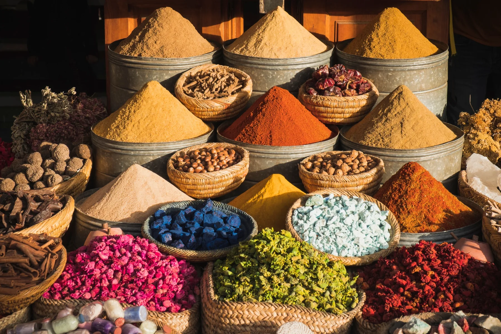
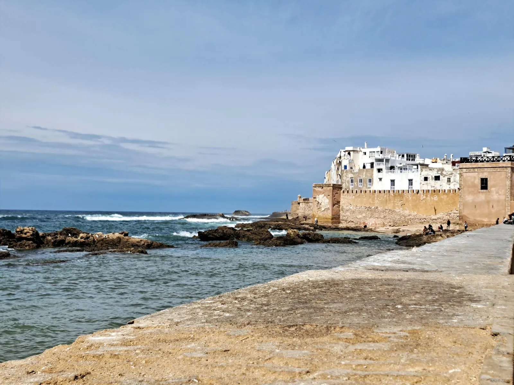
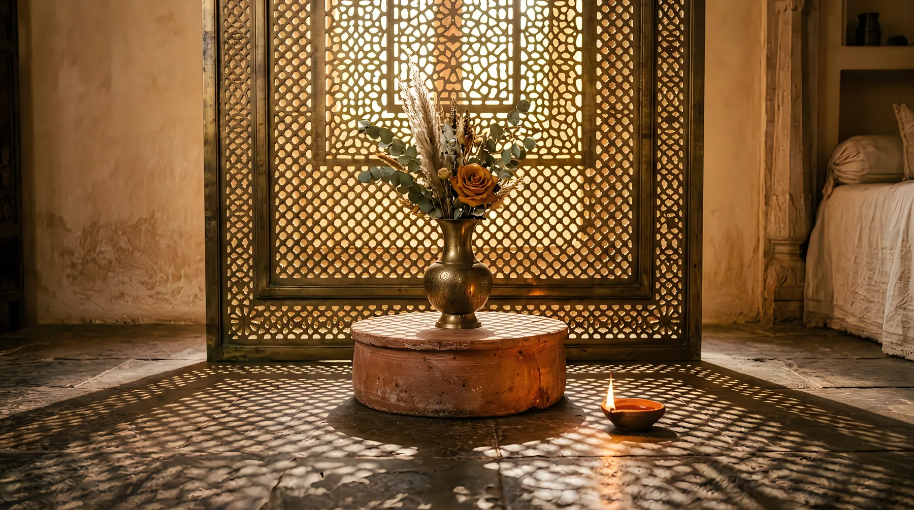

DAY 1 · Marrakech
We begin slowly
Arrival and transfer to the riad.
A first walk through the medina, a tea and a welcome dinner. No need to do more.
The journey has just begun.

8 days · Marrakech · Essaouira · Ouirgane
There is a Morocco you discover by covering kilometres. And there is another that appears when we stop watching the clock.
Moroccan Soul is our slowest journey.
Marrakech, the Atlantic and the Atlas mountains, to enjoy the food, the craftsmanship, the markets, the sea and the calm of small villages.
We don't want to fill every day. We want to leave room to live.
I want to do this route ↗Arrival and transfer to the riad.
A first walk through the medina, a tea and a welcome dinner. No need to do more.
The journey has just begun.

A day to discover the city unhurried. Heritage, gardens, souks and crafts.
And also time to choose how you want to enjoy it: a hammam, a spa, a workshop, a long lunch or simply getting lost in its streets.

We leave Marrakech and head for the ocean.
We arrive in Essaouira, with its medina, its fishing port, its galleries and its craftspeople.
In the afternoon we walk beside the sea and wait for the sunset.

Today there is no list of things to do. There are options.
Beach. Fresh fish. Sidi Kaouki. Surfing. Kitesurfing. A stroll through Essaouira. Or simply doing nothing.

We leave the ocean and head inland.
We cross argan forests and visit a cooperative before continuing towards the Atlas mountains.
We arrive in Ouirgane. Greener. Calmer. A different rhythm.

A day to discover the surroundings.
We walk in the mountains, visit Berber villages, share a tea and discover the local food.
We can also take a cooking workshop.

Today we leave space. Pool. Garden. Hammam. Massage. A walk. Or simply gazing at the mountains.
One last dinner to close the journey.

After breakfast, transfer to Marrakech airport. About one hour's drive.
Moroccan Soul ends the way we like good journeys to end: calmly.
We can adapt the route, the length, the accommodation and the experiences to your time, interests and way of travelling.
Let's talk about this route ↗